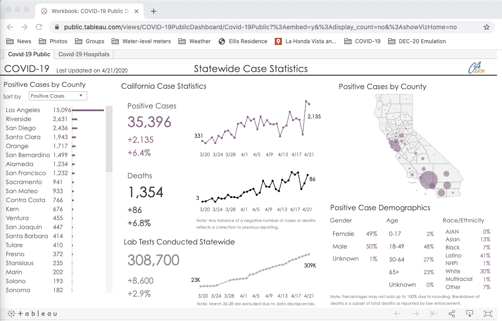
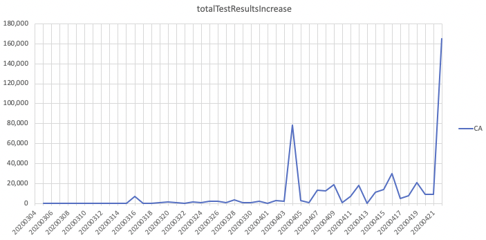
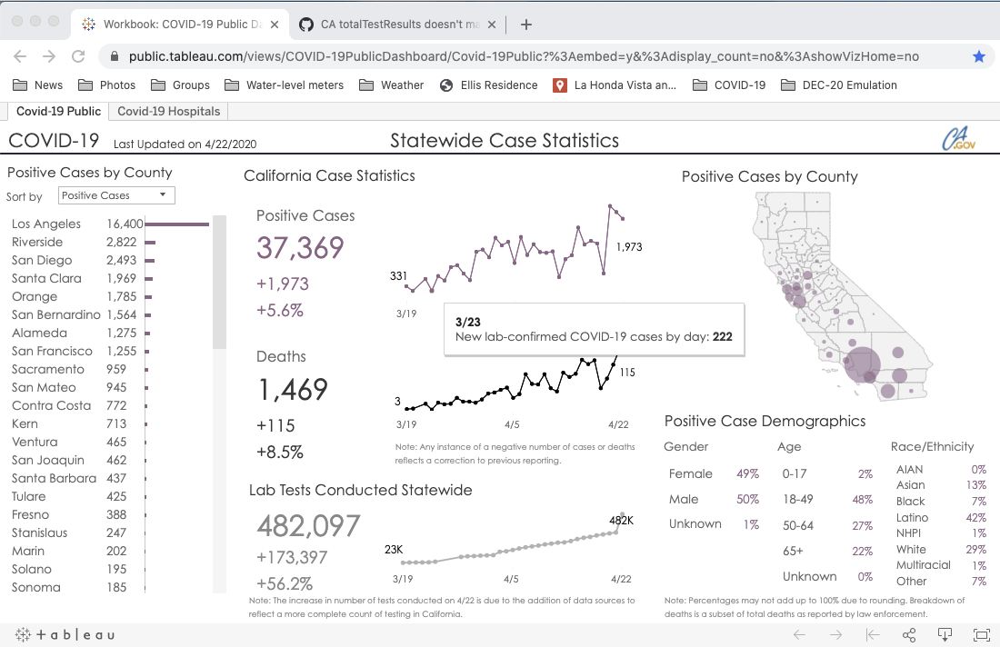

CA totalTestResults doesn't match state dashboard
“states_current” doesn’t match the state dashboard, and “states_daily_4pm_et” shows a huge jump in negative results:
-
states_cuirrent: totalTestResults = 465327 (dateModifed = 2020-04-21T04:00:00Z)
-
dashboard: Lab Tests Conducted Statewide = 308,700 (last updated 4/21/2020) (see screenshot)
-
states_daily_4pm_et: negativeIncrease = 163092 (dateChecked = 2020-04-22T20:00:00Z)


The CA state public dashboard got updated this morning and it now shows the huge 61% increase in negative results on 4/22, with this footnote:
The positive rate dropped in one day from 11.1% to 7.6%. The lack of any additional explanation doesn’t inspire confidence.
I guess this project must have an alternative path to the state data other than the public dashboard, since “states_current” was showing data for 4/22 yesterday evening while the dashboard said “Last updated 4/21/2020” and showed that day’s data.
